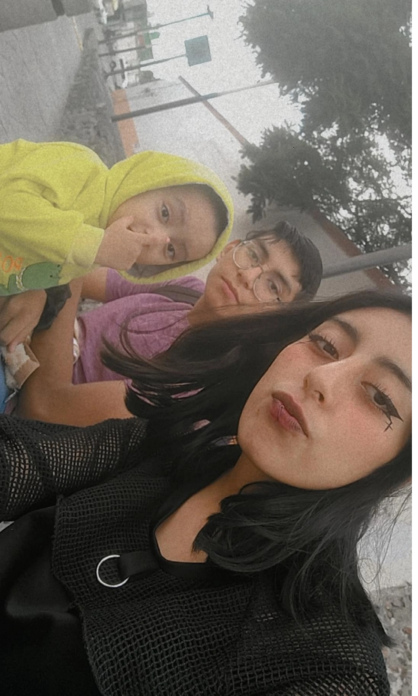

B-I-O-G-R-A-F-I-A

Vania Elizabeth Sanballet Pérez (21 de junio de 2002)
estudiante de Ingenieria en Software
Viví los primeros 8 años de mi vida en el estado de México, donde estudie hasta la mitad del tercer año de primaria
posteriormente viví en Iztapalapa, Renovación donde
comence a cuidar de mi y de hermano ya que mis padres tenian un
un negocio que atender y que les tomaba la mayor parte de su tiempo aprendí a cocinar, lavar y a cuidar de otra persona ademas de mi, con 8 años de edad,
no era muy sociable durante mis ultimos tres años de primaria, comence a tener amigos una vez que ingrese a la secundaria
no eran amistades convecionales, la mayoria de ellos eran drogadictos, asaltantes y dealers.
Aun con ese "tipo" de amistades aprendí que hay mas sobre las personas que solo su exterior y lo que reprentaban para sociedad,
cuando tenia 13 años mi mejor amigo murio y fue un momento muy dificil para mi, pues despues de mucho era la unica persona en la que confiaba
en la escuela no iba con malas notas, siempre a entendí la importancia de la escuela, para ese momento sabia que no podia dejar que mis situaciones
personales intervinieran con mis estudios así que comence a separar todas mis cosas personales y academicas.
A los 15 años regrese a vivir al Estado de México, aun si no queria tenia que adaptarme a otro lugar, no fue muy
complicado, ya estaba acostumbrada a cambiar de casa frecuentemente.
Al entrar a la prepa no fueron los mejores 3 años de mi vida pues pase por bullying y varias acusaciones por parte de mis compañeros
como tal ningún profesor o autoridad hacian nada al respecto, es por eso que esa etapa trato de no mecionarla.
Cuando entre a la universidad esperaba que mi vida fuera como en la prepa, pero fue totalmente distinto, despues de mucho tiempo volví a tener
ganas de socializar, aprender y poder ser yo misma, sin temor a que volviera a repetir la misma situación, aun si
aveces me es complicado tener que cuidar de mis hermanos (Angel 15 años y Dereck 2 años), hacer las tareas del hogar,
ser mediador en los problemas de mis padres y no descuidar mis estudios intento no fallar en ninguno.